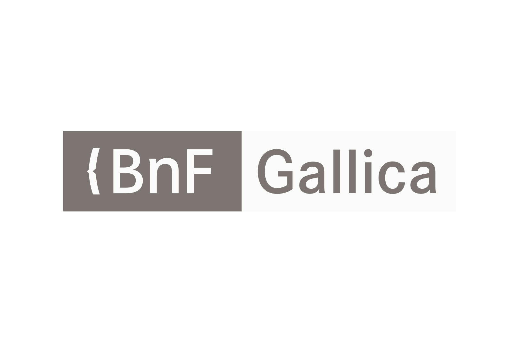

1997
Gallica est la bibliothèque numérique de la Bibliothèque nationale de France et de ses partenaires.
En libre accès depuis 1997, elle regroupe plus de 5 millions de documents (des livres au format Epub, des journaux, des revues, des images, des enregistrements sonores, des cartes, des manuscrits et des vidéos).
Devenir la "bibliothèque virtuelle de l'honnête homme" est l'ambition de Gallica lors de son lancement.
Enrichie sans cesse, cette bibliothèque offre aujourd'hui un accès libre à plus de trois millions de documents.